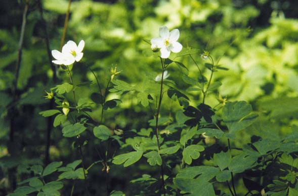
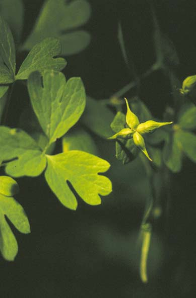
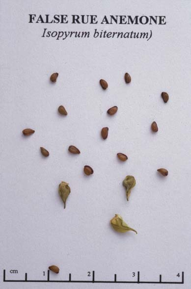

Enemion biternatum
Family: Ranunculaceae
False Rue Anemone
Swink/Wilhelm #9


FLOWERING: April - Early June
SEED TIMING: Mid-June
HABITAT: Rich woods
DIAGNOSTIC FEATURES: 4 to 16 inches high. Compound leaves with 9 broadly ovate, 3 lobed leaflets, each about 1/2 inch long. White, buttercup flowers bloom in small clusters at the ends of the stems or on stalks in the leaf axils. This species closely resembles Anemonella thalictroides, but Anemonella has a set of whorled leaves just below the flowers and the leaf lobes are not as deeply cut as they are in Isopyrum.
TO PICK: A cluster of green ovate, spreading follicles, each up to 1/4 inch long and long-tapering to the tip, with several seeds. Ripe follicles will fall easily off when pulled between thumb and finger.